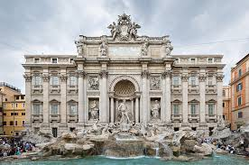
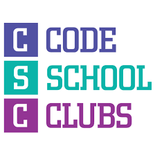
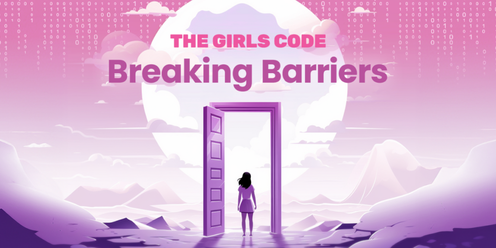

Exploring Rome
Travel
Added by
Varzar Maria
.
December 13, 2024
Rome (Italian and Latin: Roma, pronounced [ˈroːma] ⓘ) is the capital city of Italy. It is also the capital of the Lazio region, the centre of the Metropolitan City of Rome Capital, and a special comune (municipality) named Comune di Roma Capitale. With 2,860,009 residents in 1,285 km2 (496.1 sq mi), Rome is the country's most populated comune and the third most populous city in the European Union by population within city limits. The Metropolitan City of Rome, with a population of 4,355,725 residents, is the most populous metropolitan city in Italy. Its metropolitan area is the third-most populous within Italy. Rome is located in the central-western portion of the Italian Peninsula, within Lazio (Latium), along the shores of the Tiber Valley. Vatican City (the smallest country in the world and headquarters of the worldwide Catholic Church under the governance of the Holy See) is an independent country inside the city boundaries of Rome, the only existing example of a country within a city. Rome is often referred to as the City of Seven Hills due to its geographic location, and also as the "Eternal City". Rome is generally considered to be the cradle of Western civilization and Western Christian culture, and the centre of the Catholic Church.
Movie to see this winter
Movies
Added by
Varzar Maria
.
December 12, 2024

Harry Potter and the Deathly Hallows – Part 1 is a 2010 fantasy film directed by David Yates from a screenplay by Steve Kloves.
The film is the first of two cinematic parts based on the 2007 novel Harry Potter and the Deathly Hallows by J. K. Rowling.
It is the sequel to Harry Potter and the Half-Blood Prince (2009) and the seventh instalment in the Harry Potter film series.
The film stars Daniel Radcliffe as Harry Potter, with Rupert Grint and Emma Watson, respectively, reprising roles as Harry's best friends Ron Weasley and Hermione Granger.
The story follows Harry Potter, who has been asked by Dumbledore to find and destroy Lord Voldemort's secret to immortality – the Horcruxes.
Filming began on 19 February 2009 and was completed on 12 June 2010.
It was released in 2D cinemas and IMAX formats in the United Kingdom and in the United States on 19 November 2010, by Warner Bros.
The film received positive reviews with critics praising the performances, cinematography, visual effects and musical score.
Best shaorma in town
Food
Added by
Varzar Maria
.
December 10, 2024
If you're a food enthusiast or just someone who loves indulging in delicious street food, then the shaorma from El Greco in Târgu Mureș is a must-try.
Known for its unique blend of flavors and high-quality ingredients, this shaorma has become a local favorite and a culinary landmark in the city.
El Greco isn't just any fast-food joint; it’s a place where tradition meets innovation.
Their shaorma is crafted with care, using fresh ingredients and a secret mix of spices that elevate it above the ordinary.
A visit to El Greco is more than just grabbing a quick meal.
The aroma of freshly grilled meat, the friendly staff, and the vibrant atmosphere make it a memorable experience.
Many locals and tourists alike praise the consistency and quality that El Greco delivers with every order.
Python course to take this year
Self development
Added by
Varzar Maria
.
November 16, 2024

Are you ready to dive into the world of coding and unlock endless possibilities?
The Python lessons offered by Code School Clubs are your gateway to learning one of the most versatile and in-demand programming languages today.
Whether you're a beginner or have some coding experience, these lessons are designed to make Python accessible and exciting.
The Python curriculum at Code School Clubs is structured to provide a comprehensive and engaging learning experience.
Here’s what you can expect:
- Foundational Concepts: Start with the basics, such as variables, data types, and control structures, to build a strong foundation.
- Hands-On Projects: Apply what you learn by creating real-world projects like simple games, calculators, or even web scrapers.
- Interactive Lessons: Learn through coding exercises, quizzes, and collaborative activities that keep you engaged.
- Guidance from Experts: Experienced trainers are there to guide you every step of the way, offering personalized feedback and support.
Breaking Barriers
Self development
Added by
Varzar Maria
.
February 7, 2025
My Experience at Breaking Barriers Courses: Opportunities for Girls in Technology
In a world where technology plays an increasingly important role, initiatives like Breaking Barriers are essential for creating an inclusive and accessible environment for everyone. We had the opportunity to participate in these courses, and the experience was extraordinary, both educationally and inspirationally.
A Supportive and Growth-Oriented Community
Breaking Barriers is not just a technical training program but also a community where girls are encouraged to develop their skills and build confidence in their abilities. From the first session, we were welcomed by dedicated mentors who guided us with patience and professionalism. The friendly atmosphere and support from our peers helped us overcome our fears and focus on learning.
Technical Skills and Self-Confidence
An important aspect of the Breaking Barriers courses is that they focus not only on technical knowledge but also on personal development. We learned to work with different programming languages, develop practical projects, and collaborate in teams. Besides these technical skills, we discovered that self-confidence is just as important as any line of code written.
Why Is It Important to Support Girls in Technology?
The tech industry is still male-dominated, and this discrepancy can discourage many talented girls from pursuing a career in the field. Breaking Barriers has shown us how crucial female representation in technology is. When girls see successful role models and receive the necessary support, they are more motivated to follow their passions and contribute to innovation.
A Step Towards a More Equitable Future
My experience at Breaking Barriers demonstrated that change is possible. With more initiatives like this, gender barriers can be overcome, and the world of technology can become a more equitable place for everyone. Every girl who gets the chance to learn and grow in an inclusive environment can become an inspiration for future generations.
We encourage all girls passionate about technology to follow their dreams and take advantage of the opportunities offered by programs like Breaking Barriers. The future belongs to those who dare to learn and innovate!